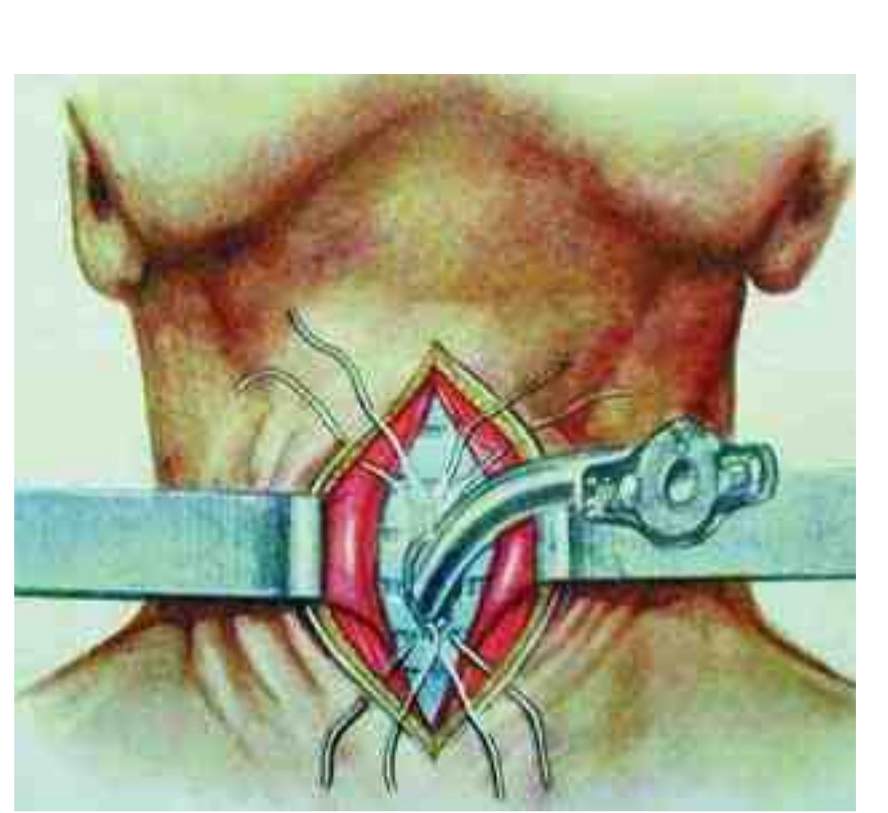
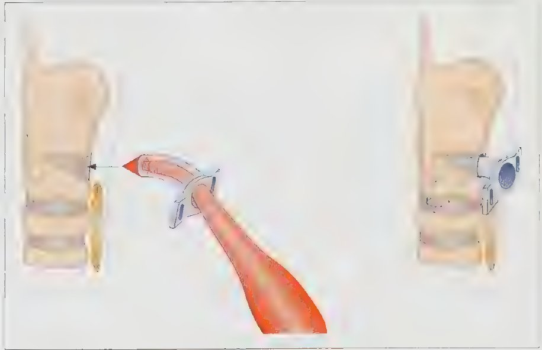
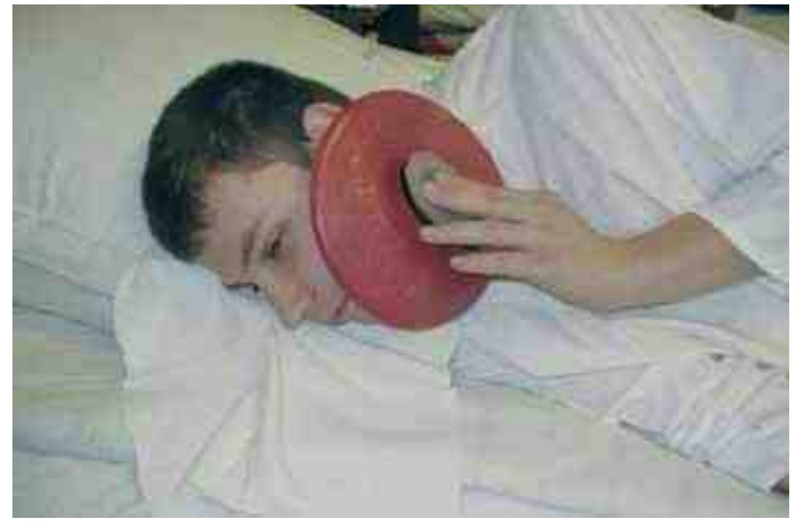

Операции на глотке, гортани и шее
Операции на глотке
- Аденотомия: показания, противопоказания, подготовка, техника и осложнения изложены в разделе Лечение аденоидов главы об аденоидах.
- Тонзиллотомия описана в разделе Гипертрофия нёбных миндалин той же главы.
- Тонзиллэктомия: показания, противопоказания, техника и остановка кровотечения изложены в разделе Лечение хронического тонзиллита.
- Увулопалатофарингопластика описана в разделе Хирургическое лечение главы о ронхопатии.
- Вскрытие паратонзиллярного абсцесса и абсцесстонзиллэктомия описаны в разделе Паратонзиллит и паратонзиллярный абсцесс главы об ангинах.
- Вскрытие заглоточного и окологлоточного абсцессов описано в разделе Окологлоточные нагноительные процессы той же главы.
Трахеотомия, трахеостомия и коникотомия
Эти хирургические вмешательства направлены на восстановление адекватного дыхания путем вскрытия полости трахеи (трахеотомия), вскрытия трахеи и соединения швами кожных краев раны с краями разреза трахеи (трахеостомия), вскрытия полости гортани через коническую связку (коникотомия) одномоментным разрезом всех слоев мягких тканей наружным доступом. Показания:
- Декомпенсированная стадия стеноза гортани.
- Необходимость продления интубации трахеи на срок свыше 3 суток.
- Как этап при других оперативных вмешательствах.
- В стадии асфиксии — экстренная коникотомия с последующей трахеостомией.
Необходимо отметить, что при соответствующих показаниях врач обязан выполнить эти операции практически в любых условиях и без промедления. по: Пальчун и соавт., с. 266
По отношению к перешейку щитовидной железы в зависимости от уровня разреза различают:
- Верхнюю трахеотомию — над перешейком щитовидной железы.
- Нижнюю трахеотомию — под перешейком щитовидной железы.
- Среднюю — через перешеек щитовидной железы с предварительным его рассечением и перевязкой.
Следует отметить, что такое деление является условным ввиду различных вариантов расположения перешейка щитовидной железы по отношению к трахее. Существует также разделение в зависимости от уровня разреза колец трахеи. При верхней трахеотомии разрезают 2–3 полукольца, при средней — 3–4 и при нижней — 4–5 полукольца трахеи. Анестезия — местная инфильтрационная. При коникотомии — без обезболивания.
Техника операции
Верхняя трахеотомия: положение больного обычно лежачее, под плечи необходимо положить валик, чтобы выпятить гортань и облегчить ориентировку. Иногда, при быстро развивающейся асфиксии, производят операцию в полусидячем или сидячем положении больного. Прощупывают подъязычную кость, вырезку щитовидного и бугорок перстневидного хрящей. Для ориентировки можно бриллиантовой зеленью отметить срединную линию и уровень перстневидного хряща. Производят послойный разрез кожи и подкожной клетчатки от нижнего края щитовидного хряща на 4–6 см вертикально книзу строго по срединной линии. Рассекают поверхностную фасцию, под которой обнаруживается «белая линия» шеи — место соединения грудино-подъязычных мышц. Последнюю надсекают и тупым путем нежно отсепаровывают мышцы. После этого обозревается часть перстневидного хряща и чуть ниже перешеек щитовидной железы, который имеет коричнево-красный цвет и на ощупь мягкий. Затем производят разрез капсулы железы, фиксирующей перешеек, последний смещается книзу и удерживается тупым крючком. После этого становятся видны кольца трахеи, покрытые фасцией.
До вскрытия трахеи необходим тщательный гемостаз. Для фиксации гортани, экскурсии которой при асфиксии значительно выражены, вкалывают острый крючок в дугу перстневидного хряща и подтягивают гортань кверху. Во избежание сильного кашля с помощью шприца с иглой в трахею вводят несколько капель 2–3% раствора тетракаина. Остроконечным скальпелем вскрывают 2–3 полукольца трахеи в виде окошка диаметром около 1 см. Нельзя разрезать первое полукольцо, поскольку в последующем трахеотомическая трубка будет травмировать перстневидный хрящ и вызовет хондрит. Величина разреза должна соответствовать величине трахеотомической трубки. Поскольку при трахеотомии остается расстояние между краями кожной раны и краями разреза трахеи в виде открытой раневой поверхности, которая в последующем долго заживает, формируют трахеостому. Для этого накладывают 4 шва шелковыми нитями между трахеей и краями кожной раны (рис. 3.66). Края отверстия в трахее раздвигают с помощью расширителя Труссо1 или Киллиана и вводят трахеотомическую трубку. по: Пальчун и соавт., с. 266–267

В некоторых случаях — в детской практике, а также при стенозе, вызванном дифтерией гортани и трахеи, — используется назо(оро)трахеальная интубация гибкой трубкой из синтетического материала. Интубация производится под контролем прямой ларингоскопии, продолжительность ее не должна превышать 3 суток. Если необходим более длительный срок интубации, выполняется трахеотомия, поскольку длительное пребывание интубационной трубки в гортани вызывает ишемию слизистой оболочки с последующим ее изъязвлением, рубцеванием и стойким стенозом органа. по: Пальчун и соавт., с. 267–268
Точка зрения зарубежных авторов
Первую трахеостомическую трубку надёжно фиксируют не менее чем на 3 суток, пока не сформируется канал, и меняют через 7 дней, тогда же снимают швы. Тесёмки завязывают с обеих сторон шеи при нейтральном положении головы: если затянуть их при разогнутой шее, они окажутся слишком длинными, и трубка может быть выкашляна. Манжету, как правило, сдувают через 12 ч после операции, когда риск аспирации миновал. Вдыхаемый воздух не согревается и не увлажняется в верхних дыхательных путях, поэтому количество и вязкость трахеального секрета возрастают; в первые дни часто необходимы санация трахеи и увлажнение вдыхаемого воздуха, чтобы трубку не закупорили корки. Больному нужны письменные принадлежности для общения.
Редко возникает воздушная эмболия при вскрытии крупных вен шеи. Трубка может сместиться в претрахеальное пространство: больной какое-то время продолжает дышать, но одышка постепенно нарастает, а трахеостомическое отверстие тем временем закрывается, и трубку уже не удаётся ввести обратно. При закупорке трубки и плотно ушитой коже развивается подкожная эмфизема шеи. Трахеопищеводный свищ возникает при ранении задней стенки трахеи во время операции или при давлении конца трубки на неё и проявляется аспирацией, несмотря на раздутую манжету. Трахеоартериальный свищ, чаще с плечеголовным стволом, встречается главным образом после облучения и при низкой трахеостомии и проявляется внезапным массивным кровотечением: трубку немедленно меняют на трубку с манжетой, раздувают манжету и незамедлительно ревизуют рану. К поздним осложнениям относятся трахеокожный свищ и стеноз трахеи. по: Scott-Brown, т. 3, с. 1044–1045
Коническая (перстнещитовидная) связка между щитовидным и перстневидным хрящами лежит непосредственно под кожей и легко пальпируется; её рассекают поперечным разрезом. Инструмент, которым вскрывают просвет гортани, держат перпендикулярно коже и не извлекают, пока между щитовидным и перстневидным хрящами не введена трубка: иначе слои тканей смещаются и закрывают доступ к просвету. В каждой укладке для неотложной помощи полезно иметь готовый набор для коникотомии. по: Probst и соавт., с. 379

Удаление инородных тел глотки и гортани, трахеи и бронхов
Показания — инородные тела полых органов. Анестезия — интубационный наркоз, местная аппликационная анестезия. Извлечение инородного тела из гортанного отдела глотки иногда затруднено. Эту манипуляцию следует выполнять после введения подкожно 1 мл 0,1% раствора атропина сульфата и 1 мл 1% раствора тримеперидина под местной аппликационной анестезией при непрямой ларингоскопии гортанными щипцами или при прямой гипофарингоскопии прямым корнцангом или щипцами. Реже инородное тело из грушевидного кармана удаляют с помощью эзофагоскопа. При нахождении крупного инородного тела, например зубного протеза, в гортаноглотке не рекомендуется удалять его с применением силы во избежание ранения стенок глотки. Если не удается его расшатать и извлечь, то производят операцию — фаринготомию. Удаление инородного тела из гортаноглотки следует выполнять в оториноларингологическом стационаре. При развитии стеноза гортани вследствие попадания крупного инородного тела в гортаноглотку следует попытаться удалить его гортанными изогнутыми щипцами, если же это не удается, то необходимо срочно произвести трахеостомию или коникотомию.
Из носоглотки инородное тело может быть удалено изогнутыми щипцами или инструментом Гартмана. Удаление облегчается при оттягивании мягкого нёба резиновым катетером. Крупное инородное тело из носоглотки может быть продвинуто в ротоглотку с помощью зонда, введенного через полость носа. При этом нужно помнить о возможности смещения и проскальзывания инородного тела в пищевод или гортань. При осложнениях, обусловленных инородными телами, оперативное вмешательство необходимо сочетать с активной антибактериальной и дезинтоксикационной терапией.
Диагноз инородного тела гортани устанавливают при ларингоскопии (у детей — при прямой ларингоскопии). Под контролем гортанного зеркала, используя изогнутые гортанные щипцы, в большинстве ситуаций удается извлечь инородное тело. В редких случаях, при выраженном стенозе гортани, показана экстренная трахеотомия. Иногда крупное инородное тело у входа в пищевод может вызвать тяжелый стеноз гортани, причем при прямой ларингоскопии не удается обнаружить инородное тело. В таких случаях следует с помощью ларингоскопа произвести прямую гипофарингоскопию (эзофагоскопию), включающую осмотр входа в пищевод.
Больному с инородным телом трахеи показана экстренная трахеоскопия с последующим удалением инородного тела. Если инородное тело локализуется в нижнем отрезке и бифуркации трахеи или в бронхе, то трахеотомия никакого облегчения больному не принесет, однако значительно улучшит условия его удаления. Методом выбора является неотложное эндоскопическое исследование трахеи через естественные пути (верхняя трахеоскопия) и удаление инородного тела. В осложненных случаях (отек, инфильтрация слизистой оболочки трахеи, общие реакции и др.) удаление инородного тела производится через предварительно наложенную трахеостому (нижняя трахеоскопия). В настоящее время в подавляющем большинстве случаев инородные тела бронхов удаляют при верхней бронхоскопии с помощью дыхательного бронхоскопа. Манипуляцию производят под наркозом с применением миорелаксантов короткого действия. С введением в практику дыхательных бронхоскопов значительно расширились возможности трахеобронхоскопии. по: Пальчун и соавт., с. 268–269
Ведение больного после операций в глотке
Среди операций в глотке наиболее распространенной является тонзиллэктомия. Операция обычно завершается тщательным гемостазом и внимательным осмотром тонзиллярных ниш. После операции больного отвозят на сидячей каталке в палату и укладывают в постель таким образом, чтобы он лежал на боку со слегка опущенной на грудь головой (рис. 3.67). На шею соответственно операционной ране на 20–30 мин помещается пузырь со льдом. В первый день больному показан абсолютный покой, он должен избегать глотательных движений, ему не следует откашливаться. Больному запрещается разговаривать, при крайней необходимости что-либо сообщить ему разрешают написать. При отсутствии признаков геморрагии через 6–8 ч после операции больной может выпить несколько глотков воды, которая должна быть холодной или комнатной температуры, без газа.

На ночь больному целесообразно назначить анестетики и седативные средства, обычно парентерально (тримеперидин, диазепам, трамадол, кеторолак, метамизол натрия в комбинации со спазмолитиками и др.). Со следующего дня режим смягчается. Уже утром больной получает жидкую, не горячую и не раздражающую пищу, ему разрешают разговаривать, подниматься, однако режим остается преимущественно постельным еще 2–3 дня. В этот период ему следует воздерживаться от употребления горячей, твердой пищи, но с каждым днем эти ограничения становятся все менее строгими.
Обычно первые 3–4 дня тонзиллярные ниши бывают покрыты серовато-белым фибринозным налетом, сначала сплошным, затем — островками. В этот период отмечается выраженный в различной степени отек дужек, мягкого нёба, язычка, припухание и болезненность регионарных лимфатических узлов. Температура в первые несколько дней после операции обычно нормальная или субфебрильная, однако возможно вечером в день операции и на 2-й день повышение температуры до 38 °С и выше. Это может быть следствием заглатывания крови, ее распада и усиленного всасывания. К 5–7-му дню тонзиллярные ниши практически полностью освобождаются от налетов, и их поверхность оказывается покрытой грануляциями, при этом несколько увеличивается болезненность при глотании и разговоре, в этот период иногда на 2–3 дня отмечается повышение температуры тела до субфебрильных цифр. С середины 2-й — начала 3-й недели начинается эпителизация раневой поверхности в глотке, и это сопровождается значительным снижением выраженности болевых ощущений.
При благоприятном течении послеоперационного периода на 5–7-й день после операции пациент выписывается на амбулаторное долечивание; однако ему рекомендуют избегать физической нагрузки еще в течение 3–4 нед. У больных хроническим тонзиллитом с сопряженными заболеваниями (ревматизм, полиартрит, пиелонефрит, эндокардит и др.) в целях профилактики обострения этих процессов операция должна проводиться в стадии стойкой ремиссии сопряженного заболевания и через 1–1,5 мес после перенесенного обострения хронического тонзиллита. В послеоперационном периоде рекомендуется провести профилактический курс антибиотиками пенициллинового ряда (амоксициллин + клавулановая кислота и др.). по: Пальчун и соавт., с. 269–270
Ведение больного после операций на гортани
При эндоларингеальных вмешательствах, в том числе микрохирургических, в первые сутки после операции, как правило, развивается реактивный отек тканей гортани, выраженность которого зависит от объема вмешательства и от того, насколько травматично проходила операция. Существует также опасность кровотечения, возможность присоединения инфекции верхних дыхательных путей. Сразу после операции больной должен находиться в постели, лучше в полусидячем положении, рекомендуется холод местно на область гортани. В первые сутки после операции показан режим молчания, голосовой покой рекомендуется и в последующие несколько суток. В течение 4–6 ч после операции не рекомендуется прием пищи, затем назначается щадящая диета с исключением горячей, раздражающей пищи, кофе, крепкого чая, газированных напитков. Абсолютно противопоказано курение, прием спиртных напитков.
Из медикаментозных средств назначаются противоотечные средства (гипертонический раствор глюкозы, антигистаминные, мочегонные, гормональные препараты), антибактериальная терапия, гемостатические препараты. Больной должен находиться под наблюдением дежурного врача-оториноларинголога, при нарастании реактивных явлений вносятся коррективы в медикаментозную терапию, главным образом в целях предупреждения стеноза гортани. При нарастании признаков стеноза врач должен быть готов наложить трахеостому. После стихания в гортани реактивных изменений приступают вначале к дыхательной гимнастике, а позже и к дозированным голосовым тренировкам под наблюдением врача-фониатра. по: Пальчун и соавт., с. 270–271
Примечания
1Trousseau A. (1801–1867) — крупный французский терапевт. (по: Бабияк и соавт., т. 2, с. 645)
Источники
- Пальчун В. Т., Лучихин Л. А., Магомедов М. М. Руководство по практической оториноларингологии. — М.: Медицинское информационное агентство, 2010. — Гл. 3, раздел 3.2 «Операции в области глотки, гортани и на шее»: с. 250–271 (рис. 3.57, 3.59–3.62, 3.64–3.67).
- Watkinson J. C., Clarke R. W. (eds.) Scott-Brown's Otorhinolaryngology, Head and Neck Surgery, 8th ed. — Boca Raton: CRC Press, 2018 (т. 3, гл. 72 «Upper airway obstruction and tracheostomy», с. 1044–1045).
- Probst R., Grevers G., Iro H. Basic Otorhinolaryngology: A Step-by-Step Learning Guide. — Stuttgart: Thieme (коникотомия, с. 379, рис. 17.32).
- Бабияк В. И., Накатис Я. А., Говорун М. И. Оториноларингология. Руководство. Т. 2. — СПб.: Питер, 2009. — Примечания к главам (сведения об учёных): с. 645.
Раздел «Учебник» — справочная теория, не клинические рекомендации. Тактика ведения пациента — по разборам КР.